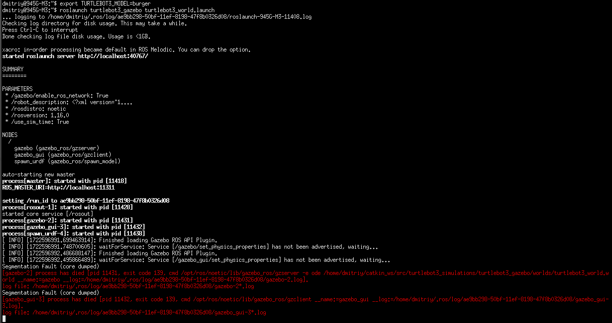
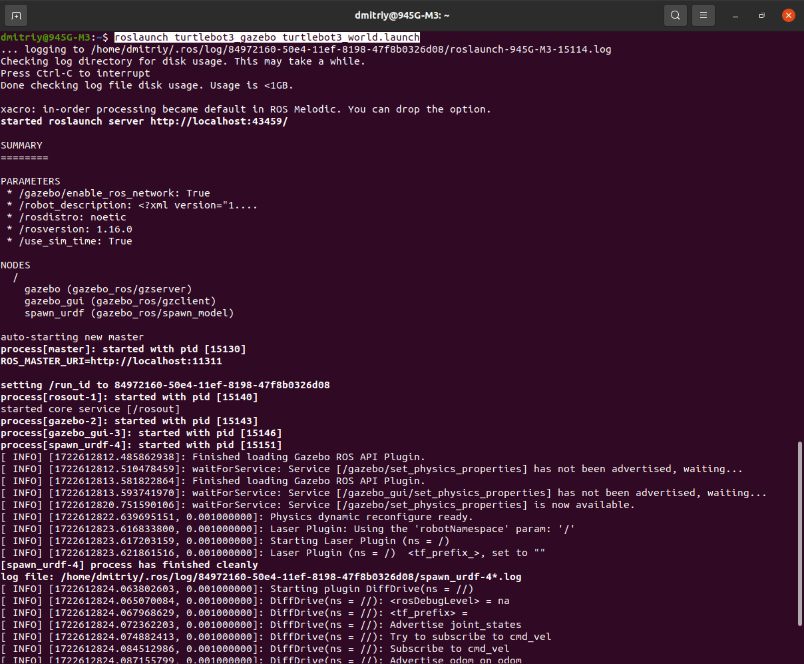
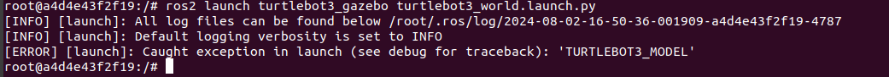
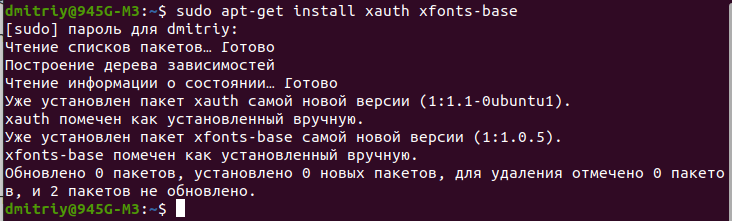
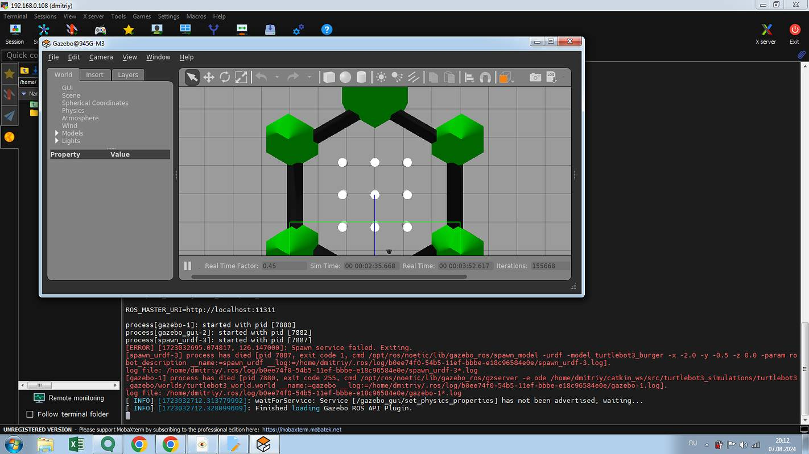
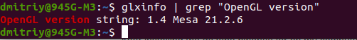
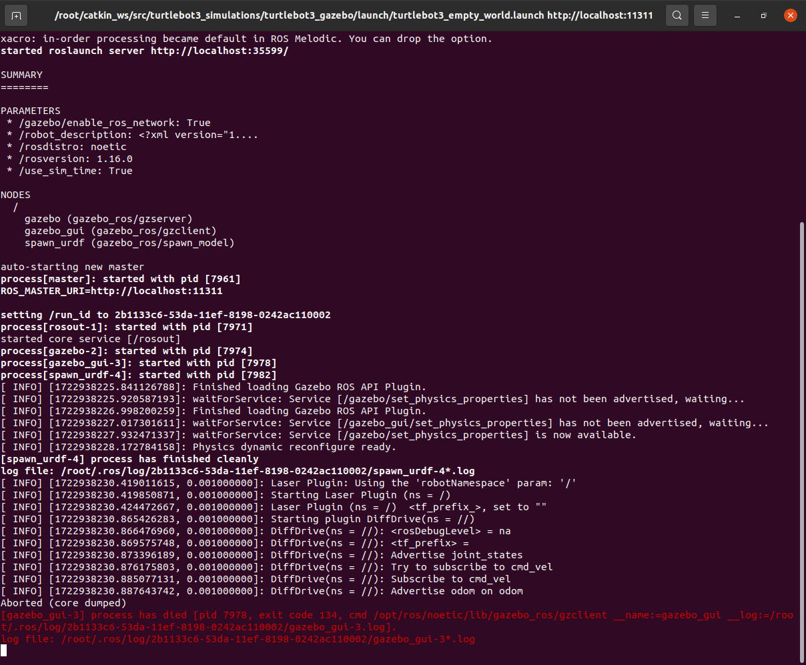
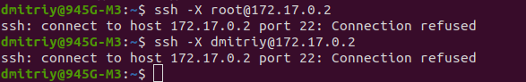

Потом со страницы Turtlebot3 simulation выполняем пункт 6.1.1:
cd ~/catkin_ws/src/
git clone -b noetic-devel https://github.com/ROBOTIS-GIT/turtlebot3_simulations.git
cd ~/catkin_ws && catkin_make
Возникала ошибка, что ros не видел нужный мне уже установленный пакет turtlebot3_gazebo и вообще все пакеты из catkin_ws/src.
Ошибку устранил после того как в файле ~/.bashrc расположил строки в правильном порядке:

Если эти строки в другом порядке расположить, тогда возникает ошибка, что ros не видит пакеты в catkin_ws/src.
export TURTLEBOT3_MODEL=burger
Запускаем в gazebo файл.launch:
roslaunch turtlebot3_gazebo turtlebot3_world.launch
Из-за того что не выполнил вначале export TURTLEBOT3_MODEL=burger возникает ошибка:

Выполнил обе команды, но теперь ошибка:

Сказали, что проблема в видеокарте. Я всё-же решил установить отдельно gazebo на ubuntu и проверить, как он будет запускаться.
Установка Gazebo
Устанавливать буду классический gazebo11 со страницы Install Gazebo using Ubuntu packages.Есть несколько способов установки Gazebo:
- Как написано, используя ubuntu пакеты на этой странице скачиваем архивы и потом распаковываем в бинарные пакеты.
- Одной командой:curl -sSL http://get.gazebosim.org | sh и потом выполнить команду gazebo
- Шаг за шагом, буду его использовать:
- Установим доступ к репозиторию packages.osrfoundation.org:
sudo sh -c 'echo "deb http://packages.osrfoundation.org/gazebo/ubuntu-stable `lsb_release -cs` main" > /etc/apt/sources.list.d/gazebo-stable.list'Можем проверить, что путь к репозиторию записан и правильно:
cat /etc/apt/sources.list.d/gazebo-stable.list
Если всё верно, то увидим:

- Установка ключей на свой компьютер:
wget https://packages.osrfoundation.org/gazebo.key -O - | sudo apt-key add -

- Установка Gazebo:
Обновим debian базу данных:sudo apt-get updateТеперь установим Gazebo 11:
sudo apt-get install gazebo11
Будет установлен пакет gazebo11 самой новой версии (11.14.0-1~focal)
Дополнительно нужно установить еще один пакет:
sudo apt-get install libgazebo11-dev
У меня был уже установлен пакет libgazebo11-dev самой новой версии (11.14.0-1~focal) - Проверяем: gazebo
У меня не открылся:
Видимо всё же проблема в видеокарте.
- Установим доступ к репозиторию packages.osrfoundation.org:
Запуск gazebo через xterm
Попытаюсь запустить gazebo через xterm, как запустил в Docker, раздел Урок 5.4 Создание контейнеров и управление ими с помощью Docker.- xterm в хосте не был установлен, установил: sudo apt install xterm
- Команда: xterm
Открылось окно (терминал) xterm. - export TURTLEBOT3_MODEL=burger
roslaunch turtlebot3_gazebo turtlebot3_world.launch

Никакой разницы с выполнением этих команд в терминале GNOME.
Запуск gazebo через xvfb
Xvfb — это X11 сервер, который выполняет все графические операции в памяти без вывода на экран.
Установка: sudo apt-get install xvfb
Запуск: xvfb-run -s "-screen 0 1400x900x24" bash
export TURTLEBOT3_MODEL=burger
roslaunch turtlebot3_gazebo turtlebot3_world.launch

В другом терминале:
gzclient
Ошибка сегментирования
rosnode list
rosrun rqt_graph rqt_graph

Я так и не понял, что запустил, какой-то gazebo поцоканный. В любом случае не подходит поскольку не видно мультиков.
Запуск gazebo через ros2 в xterm
Открыл контейнер на базе ros2Выполнил команду xterm.
Получен ответ: Xt error: Can't open display: %s
xterm: DISPLAY is not set
Если выполнить команду: gazebo

ros2 launch turtlebot3_gazebo turtlebot3_world.launch.py

В общем нужно делать, как в Docker, раздел Урок 5.4 Создание контейнеров и управление ими с помощью Docker.
через MobaXterm
MobaXterm представляет собой приложение из операционной системы Windows для удаленного подключения к компьютеру и выполнения локально (на компьютере Windows) приложений из удаленного компьютера.- На windows-компьютер скачиваем zip-архив программы по этой ссылке Скачал на ubuntu, потом через флэшку скопировал на windows.
- Установка. Запустил файл внутри пакета, в процессе установки сообщил, что не нашел файл.dat. Проигнорировал.
- Нажал в правом верхнем углу x server, остановил его.
- Нажал кнопку Session. Заполнил поля host и specify username. Убедился, что X11-Forvarding, галочка стоит.

- Теперь на ubuntu-компьютере:
Установка X11:
sudo apt-get install xauth xfonts-base
Уже было всё установлено.
 - nano /etc/ssh/sshd_config
Пустой и в записи запрещён.
Нашел файл /etc/ssh/ssh_config:
sudo chmod ugo+w /etc/ssh/ssh_config
nano /etc/ssh/ssh_config

Который создал (sshd_config), чтобы он не вносил путаницу, удалил.
Перезагрузился. - Для демонстрации установил X11-приложения:
sudo apt install x11-apps
У меня уже были установлены. - mobaxterm:

адрес 192.168.0.8 пингуется.Нашёл ошибку в /etc/ssh/ssh_config, её видно на самой верхней строке на 2 скрине сверху. Исправил её. перезагрузился. Все равно mobaxterm не работает.
04.08.2024
Скачал плагин к mobaxterm, установил. Теперь в mobaxterm появился собственный терминал.
В терминале GNOME дал команду на прослушку порта 8000: nc -l 8000
В терминале Moba команда на передачу сообщений в 192.168.0.108 порт 8000: nc 192.168.0.108 8000
Теперь печатаю текст в терминале Moba, этот текст выводится в gnome. То есть сетевых проблем нет, проблема в чём-то другом. - Предположил, что все же настройки в ssh-клиенте должны находиться в /etc/ssh/sshd_config.
sudo nano /etc/ssh/sshd_config
Пустой файл. Добавил строки:host * X11Forwarding yes
Сохранил, перезагрузил компьютер.
Не помогло.
Пинговал, непонятно причем тут 192.168.0.106.

Проверил через nc, работает. - 07.08.2024
Вчера понял, что не установлен SSH-server. Сегодня установил:
sudo apt-get install openssh-server
Далее посмотрел: nano /etc/ssh/sshd_config
Полноценный файл и строка X11Forwarding yes была активной. Перезагрузил его:
sudo systemctl restart ssh - Далее в mobaxterm снова открыл соединение с 192.168.0.108. Пришлось зачем-то создавать еще master-password. После этого соединение наконец-то установилось.

- Выполнил:
export TURTLEBOT3_MODEL=burger
roslaunch turtlebot3_gazebo turtlebot3_world.launch
Но через минуту соединение сбрасывается и окно с gazebo исчезает.
Что дальше?
Что такое OpenGL, как обойти если видеокарта не поддерживает его
OpenGL (Open Graphics Library) — это спецификация, определяющая платформонезависимый (независимый от языка программирования) программный интерфейс для написания приложений, использующих двумерную и трёхмерную компьютерную графику. OpenGL включает более 300 функций для рисования сложных трёхмерных сцен из простых примитивов. Он используется при создании компьютерных игр, САПР, виртуальной реальности, визуализации в научных исследованиях. На платформе Windows конкурирует с Direct3D.
Моя версия на компьютере:

Попытка запуска через контейнер на базе ros1
Образ создаю на базе dockerfile из Отчет по практической работе №5.7Только раскомментировал строки из блока nvidia-container-runtime и не стал устанавливать gazebo11. Почему-то у меня установка gazebo11 выдавала ошибку и в dockerfile из Простая имитационная модель мобильного робота в ROS и Gazebo также нет gazebo11.
Код Dockerfile:
-------------------------------------------------------------------------------------
FROM osrf/ros:noetic-desktop
# set environment variables
ENV PYTHONDONTWRITEBYTECODE 1 # Предотвращает создание .pyc файлов
ENV PYTHONUNBUFFERED 1 # Предотвращает буферизацию вывода Python, улучшая логирование
#nvidia-container-runtime
ENV NVIDIA_VISIBLE_DEVICES \
${NVIDIA_VISIBLE_DEVICES:-all}
ENV NVIDIA_DRIVER_CAPABILITIES \
${NVIDIA_DRIVER_CAPABILITIES:+$NVIDIA_DRIVER_CAPABILITIES,}graphics
# set work directory
#RUN mkdir /workspace/src/mobile_robot_base_ros1 -p
WORKDIR /task5
# Additional commands (installing dependencies)
RUN apt-get update && \
apt-get install -y \
curl \
wget \
python3-pip \
python3-tk # Пакеты длля tkinter
# Gazebo 11
RUN sudo sh -c 'echo "deb http://packages.osrfoundation.org/gazebo/ubuntu-stable `lsb_release -cs` main" > /etc/apt/sources.list.d/gazebo-stable.list'
RUN wget https://packages.osrfoundation.org/gazebo.key -O - | sudo apt-key add -
RUN sudo apt-get install -y libgazebo11-dev
# RUN sudo apt-get install -y ros-noetic-gazebo-ros
# RUN sudo apt-get install -y gazebo11
# Дополнительные пакеты Gazebo для работы с ROS
# RUN curl -sSL http://get.gazebosim.org | sh
RUN apt-get update && \
apt-get install -y \
# gazebo11 \
# libgazebo11-dev
ros-noetic-gazebo-ros \
ros-noetic-gazebo-ros-pkgs \
ros-noetic-gazebo-ros-control
# Установка дополнительных пакетов ROS для управления и работы с роботами
RUN apt-get update && \
apt-get install -y \
ros-noetic-control-toolbox \
ros-noetic-realtime-tools \
ros-noetic-ros-controllers \
ros-noetic-xacro \
python3-wstool \
ros-noetic-tf-conversions \
ros-noetic-kdl-parser \
liburdfdom-tools
# Установка инструментов для разработки
# net-tools содержит сетевую утилиту ifconfig
# curl служит для закачки файлов по url-адресу
# iputils-ping содержит команду ping
RUN apt-get update && \
apt-get install -y \
nano \
git \
tmux \
tree \
net-tools \
socat \
netcat \
curl \
iputils-ping \
iproute2
# Установка зависимостей Python
COPY ./requirements.txt /tmp/requirements.txt
RUN pip install --upgrade pip
RUN pip install -r /tmp/requirements.txt
# Настройка bashrc
RUN echo "source /opt/ros/noetic/setup.bash" >> ~/.bashrc
RUN echo "alias dros='source devel/setup.bash'" >> ~/.bashrc
RUN echo "Конец сборки"
----------------------------------------------------------------------------------
Перешёл в task5, команда: docker build -t rosgazebo1 -f docker/Dockerfile .
Создан образ rosgazebo1 на базе ros noetic с пакетами gazebo.
Запуск контейнера: docker run -it rosgazebo1 /bin/bash
Пакет turtlebot3_gazebo не установлен.
Установить невозможно.

06.08.2024:
Изменил Dockerfile: WORKDIR /workspace
Добавил установку утилит xpra и xterm
Удалил сначало контейнер, а потом образ rosgazebo1

Снова создаю образ rosgazebo1 на основе изменённого Dockerfile:
Перешел в task5 и команда: docker build -t rosgazebo1 -f docker/Dockerfile .
Убрал xpra из установки, поскольку в ходе сборки возникли из-за неё проблемы.
Собрал образ.
Запустил контейнер: docker run -it rosgazebo1 /bin/bash
Все дальнейшие команды выполняю в контейнере.
Сразу установил xpra: apt install xpra
В ходе установки запросил настройки клавиатуры, я выбрал 78 (страна клавиатуры), 1 (раскладка клавиатуры Russian) и 8 (переключение языков - Shift+Ctrl) варианты.
Далее выполняю пункты 3.1.2 по 3.1.4 из TurtleBot3 PC Setup:
3.1.2 Установка ROS на компьютер (наверное не надо было):
sudo apt update
sudo apt upgrade
wget https://raw.githubusercontent.com/ROBOTIS-GIT/robotis_tools/master/install_ros_noetic.sh
chmod 755 ./install_ros_noetic.sh
bash ./install_ros_noetic.sh
3.1.3 Install Dependent ROS Packages:
sudo apt-get install ros-noetic-joy ros-noetic-teleop-twist-joy \ ros-noetic-teleop-twist-keyboard ros-noetic-laser-proc \ ros-noetic-rgbd-launch ros-noetic-rosserial-arduino \ ros-noetic-rosserial-python ros-noetic-rosserial-client \ ros-noetic-rosserial-msgs ros-noetic-amcl ros-noetic-map-server \ ros-noetic-move-base ros-noetic-urdf ros-noetic-xacro \ ros-noetic-compressed-image-transport ros-noetic-rqt* ros-noetic-rviz \ ros-noetic-gmapping ros-noetic-navigation ros-noetic-interactive-markers
3.1.4 Install TurtleBot3 Packages
sudo apt install ros-noetic-dynamixel-sdk
sudo apt install ros-noetic-turtlebot3-msgs
sudo apt install ros-noetic-turtlebot3
В терминале хоста выполнил сразу сохранение изменений образа: docker commit 6a0fe6a80126 rosgazebo1
Снова в контейнере выполняю симуляцию по странице Gazebo simulation
Пункт 6.1.1 (Install Simulation Package):
cd ~/catkin_ws/src/
cd ~/catkin_ws && catkin_make
Пункт 6.1.2 (Launch Simulation World):
export TURTLEBOT3_MODEL=burger
roslaunch turtlebot3_gazebo turtlebot3_empty_world.launch

Эта ошибка (не видит launch.файл) вызвана тем, что не выполнил команду: source ~/.bashrc
Выполнил её, теперь:

В общем те же проблемы, что при запуске из хоста.
Попробуем выполнить через xpra.
xpra start --start=xterm --bind-tcp=0.0.0.0:9009
В хосте: xpra attach ws://172.17.0.2:9009

Выполнил в хосте последнюю команду с отключением OpenGL:
xpra attach --opengl=no ws://172.17.0.2:9009

Сохранил изменения в образе: docker commit 6a0fe6a80126 rosgazebo1
07.08.2024:
После того как установил ssh-server, снова в контейнере выполнил export и roslaunch, ничего не изменилось. Тогда установил ssh-server в контейнере:
apt-get install openssh-server
sudo systemctl restart ssh - команда не выполнилкась, видимо в контейнере нельзя.
В хосте выполнил команду сохранения изменений в контейнере: docker commit 71389537cf5f rosgazebo1
Вышел из контейнера и снова зашёл.
exit
docker run -it rosgazebo1 /bin/bash
xpra start --start=xterm --bind-tcp=0.0.0.0:9009
В хосте, как советует Сергей:

Проверил файл настроек в контейнере, нормальный, сервер установлен.
Закрыл на всякий случай MobaXterm, повторил команды. Попрежнему connection refused.
Выполнил ssh -X root@78e54dd8a6b1, теперь ssh: Could not resolve hostname 78e54dd8a6b1: Temporary failure in name resolution